UX Project: Healthlink
A health app to connect patients and doctors
Overview
Samaritan Health is a large health and wellness network in the Midwest United States. They are creating an app that will be used by patients of their network. The app should allow users to message doctors and nurses for questions they normally would call in and ask about.
This report includes research, designs, and testing conducted to create a top notch user experience on the web. In this report, we will go through the following:
- Business Goals
- Competitive Research
- User Personas
- User Surveys and Interviews
- Application Map
- UI Requirements
- Wireframes
- Usability Testing
- Mockups
Research Phase
The first phase of the project is the Research Phase. During this phase, I collected as much information as possible from the client and the user. The importance of this phase is to know exactly who I was designing for. Through competitor research and user surveys, I was able to come up with an accurate archetype of who the app should be designed for. Design choices such as color palette, layout and screen flow, app features, and other options all are affected by an understanding of the audience.
Research Goals
The main goal of the research phase is to determine what features should be included in the app, and how the app could improve their relationship with their doctor’s office. From there, we can ask what frustrations a patient has in their health and wellness journey as well as their customer experience with their doctor’s office, and how we can utilize an app to aid in those issues.
As part of the research process, my aim is to understand the user and their feelings about this particular subject. Questions will involve all aspects of their health, doctor’s office, and communication preferences. By the end of the process, I should have a clear understanding of the user and how to best design for them.
Research Methodology
Competitor Analysis - A Competitor Analysis will be performed on other health apps to see what features they offer and how easy and intuitive their UI looks.
Surveys - In order to quickly gather data, electronic surveys will be written and disseminated to find out about a user’s experience with their doctor’s office and how the app could improve their lives. I will be using Google Forms for this.
Business Goals
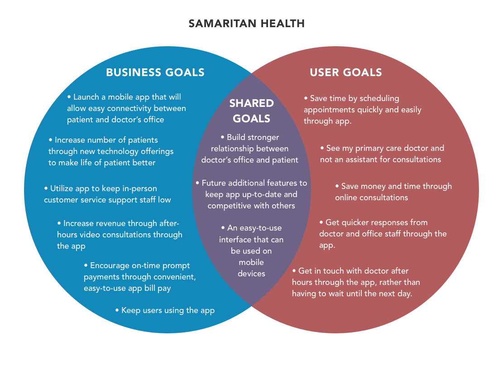
Throughout this project, I looked at goals for Samaritan Health and what they would like to accomplish with their app. We also researched user goals for patients.
Samaritan Health’s primary business goals include:
- Become the leading bank in the entire midwest region of the United States.
- Build a strong customer base with brand loyalty. • Be a profitable company by the year 2019.
- Keep users using the app and website to decrease costs of bank tellers
Competitor Analysis
For this project, I looked at multiple competitors and similar apps within the marketplace. Samaritan Health not only wanted a means to communicate with their patients, but also other features that the patient might find useful.
I looked at different features that other apps had including:
- Scheduling Appointments
- Refilling Prescriptions
- Virtual Consultations
- Messaging Doctors
- Symptom Checker
- Drug Interaction Checker
- Paying Bills
- Vaccination Reminders
- Specialist Referral
- Health Articles/Tips
User Surveys
Surveys were conducted to give a better understanding of the users. A list of questions were put together separated by category.
Categories included:
- Demographics
- Health & Wellness
- Digital Experiences
- Doctor Experiences
Surveys were built in Google Forms and disseminated to the participants. All answers were given anonymously.
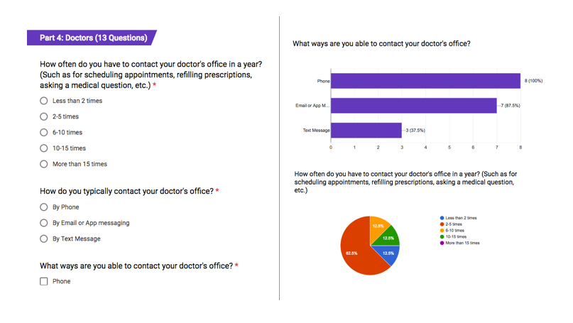
User Personas & Empathy Maps
Using research from the surveys and interviews, User Personas and Empathy Maps were developed. Surveys showed that people of all ages and genders use a health provider, however, a younger audience was more prone to use their smartphone to communicate with others.
The targeted persona created was a female between the ages of 25-35 who is a busy mom with a full time job. Empathy Maps helped show the day to day life of the user created from the persona. I explored ways in which the smartphone app would make the user’s life easier.
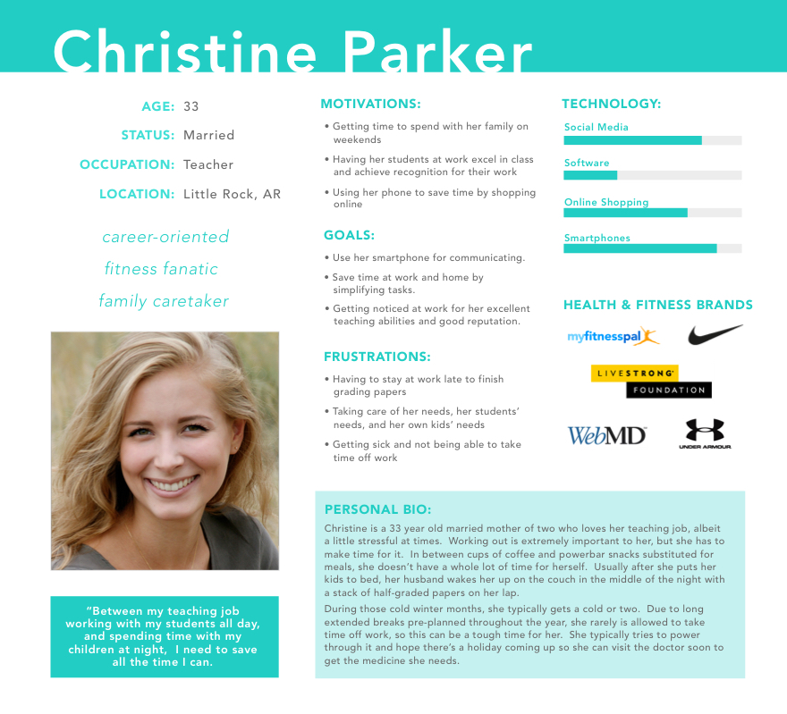
Empathy Mapping
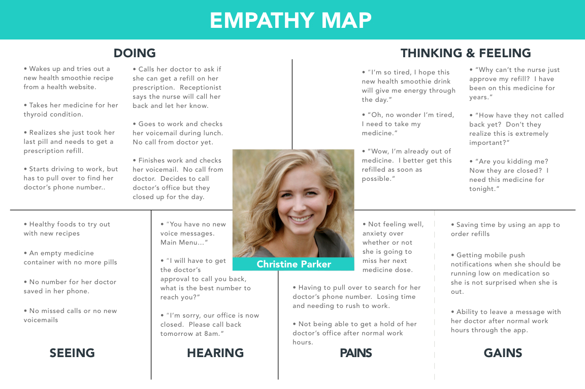
UI Requirements
After the user research part was getting close to finalized, UI requirements were written up. These included crucial user tasks including:
- User downloads app and wants to login
- User logs in and wants to send their doctor a message
- User wishes to refill their prescription
- User wishes to schedule an appointment
- User wishes to get a referral to a specialist
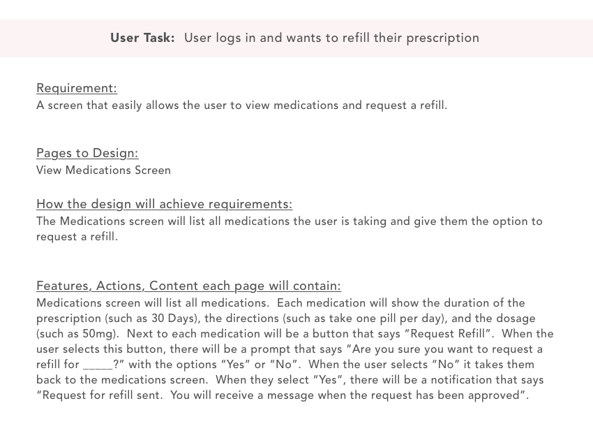
User Flows
Visualizing the tasks the user would take and how they would flow from one section of the site to another was important. During this process, important questions and decision points were introduced to understand the path of the user.
For this project I looked at the important task of requesting the doctor’s office to refill a prescription.
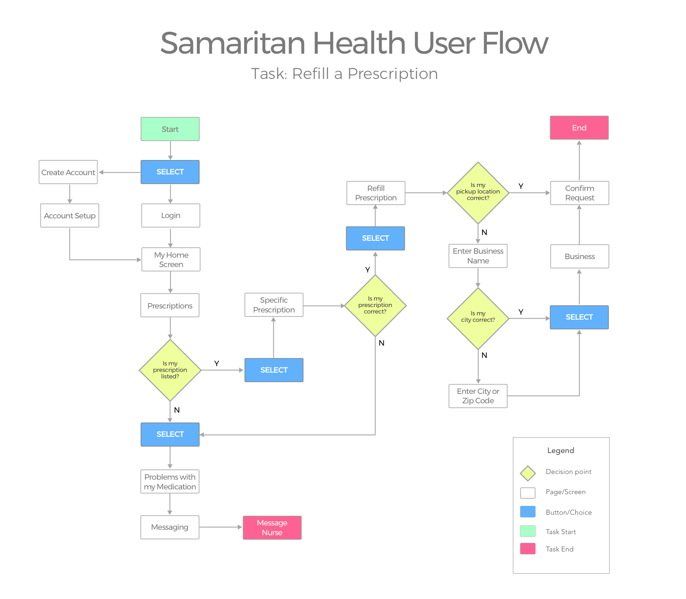
Wireframes
Wireframes were built for usability testing. The user research and UI requirements helped with the design process as the user’s needs were at the forefront of the design.
The following screens were created for usability testing:
- Homepage
- User Home
- Prescriptions
- Request Refill
- Inbox
- Drug Interaction Checker
- Schedule Appointments
Wireframes
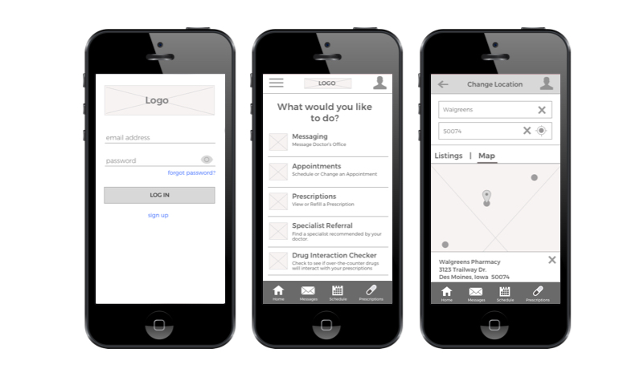
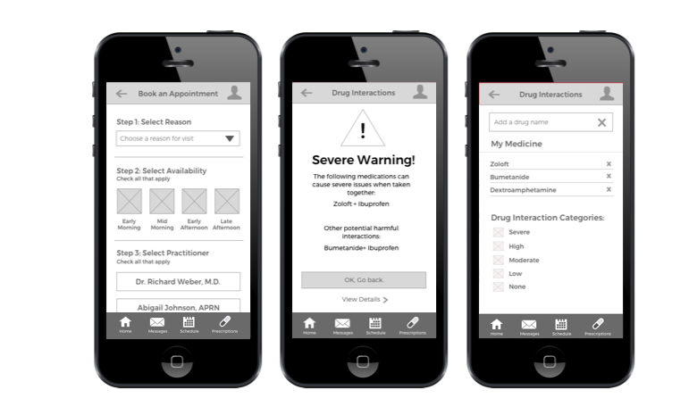
Application Map
Normally, I would create a site map for a project. However, since this project is only an app, and not a website, the flow between screens is a little different. For this, I created an Application Map.
An Application Map shows wireframes of the main screens and how the user will interact between those screens. It helps give a visible idea of the naviation between sections.
For the application map, I focused in on 5 sections. Prescriptions, Scheduling, Drug Interaction Checker, Refilling Prescriptions, and Messaging.
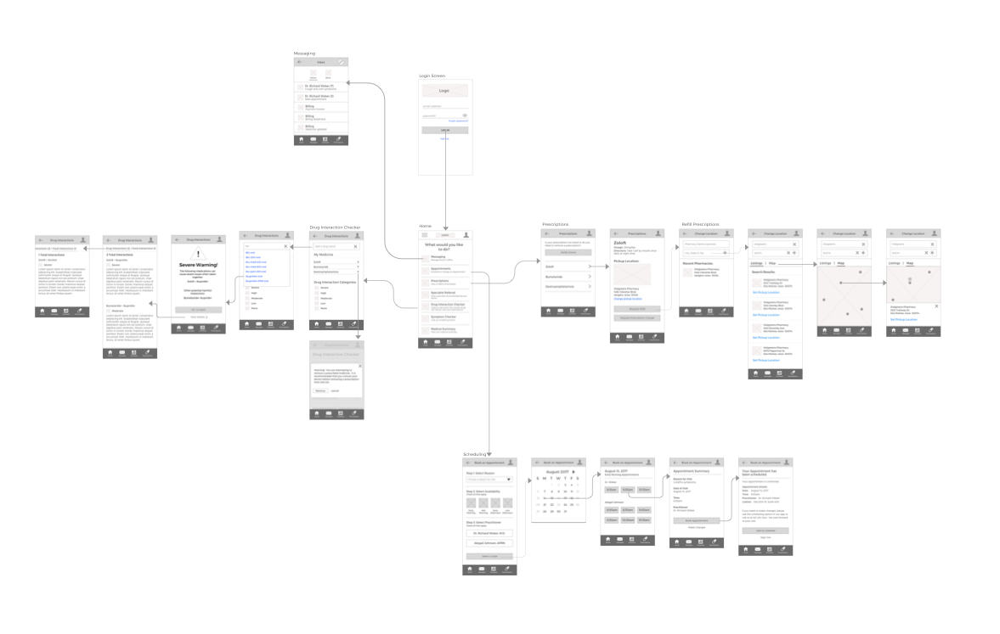
Usability Testing
Once the wireframes were completed, usability testing began through the creation of interactive prototypes.
InVision was used for Usability Testing during this process. Wireframes were conntected via hotspots set up in InVision, so the user was able to easily navigate through the site.
A detailed Usability Testing Plan was constructed and participants were recruited.
As part of the testing plan, users were asked to complete various tasks while observations were noted.
Tasks included:
- Find the dosage for your daily dose of Zoloft.
- Is Ibuprofen oral able to be taken with your current prescriptions?
- Does Ibuprofen oral have any food interactions?
- Where would you go to pay a bill?
- You have cold/flu symptoms. Schedule an appointment on August 14th at 9:30am with your doctor.
- You want to schedule a refill for Zoloft. Where would you go to do this?
Colors, Icons, Logo, and Style Tile
After the user research was finished, I focused on the visual look of the app. After researching colors related to health, blue and red shades were chosen for the base colors of the color palette.
Various health icons were drawn in Sketch and logos and wordmarks were explored. Any icons not used in the logo, were set aside for possible use throughout the app.
A style tile was built to showcase the overall look and feel of the site. This is used to show to the client before beginning the mockups. The style tile had elements such as navigation, color palette, buttons and selectors, as well as images.
Logo Design
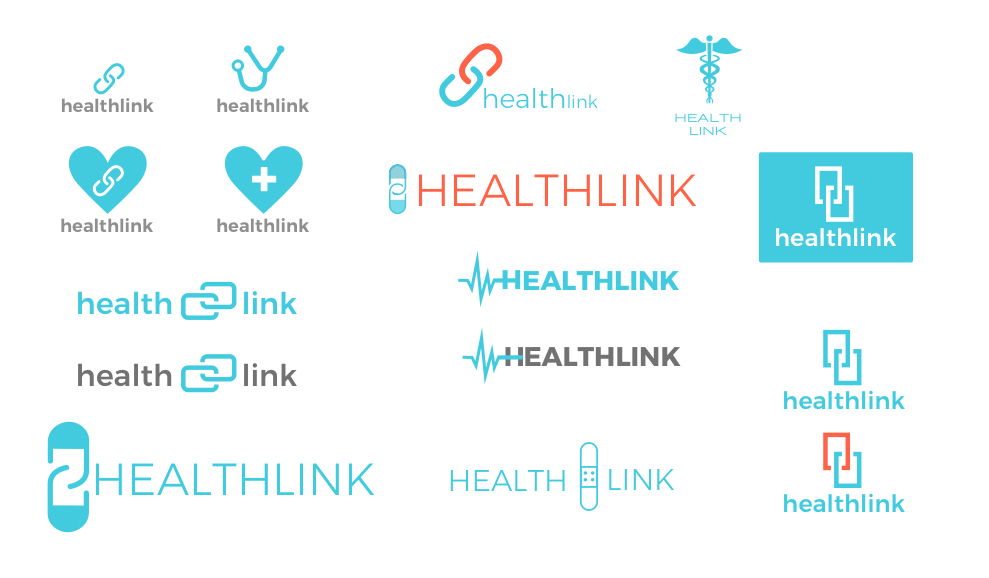
Icon Design
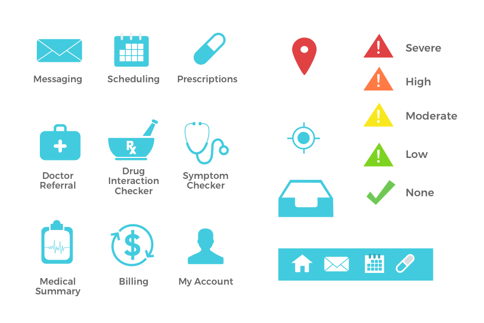
Style Tile
There was a lot of work that went into the style tile. This included finalizing the logo and choosing the color palette, as well as creating icons for navigation, comparing color schemes, choosing fonts, and looking at imagery.
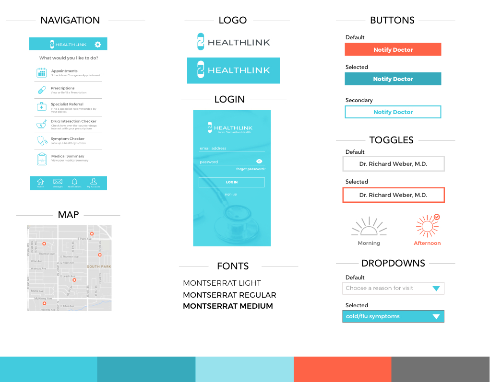
High Fidelity Mockups
The last part of the project was finalizing the mockups and creating a UI Kit. The mockups were created in Sketch and the Style Tile and wireframes were used as a guide in building them.

UI Kit
The final stage of deliverables included putting together a UI Kit. The UI kit served as a manual for future designers and developers to use for development as well as during the creation of any further assets for the app.
The UI kit included typography for all sections of the app, color palette, buttons and selectors in both default and active states, as well as icons.
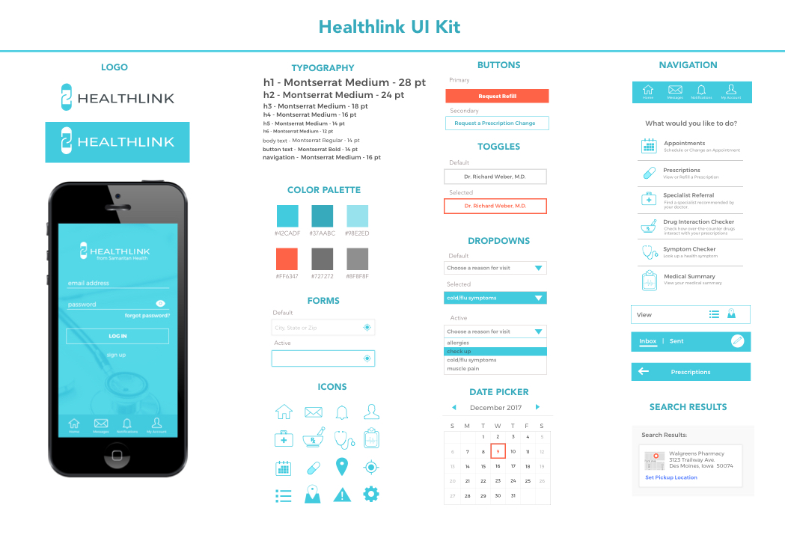
Next Steps
As part of the next steps for this project, additional mockups for screens will be developed and further usability testing will be conducted.
User feedback as well as hospital staff feedback will be monitored closely as well. Feedback from the hospital staff will be important to see how their workload as decreased and the participation rate of the users for the app.
Surveys and interviews of the hospital staff should also be conducted to see what areas patients are still calling in and needing help with. This might give some good insight into additional features that can be added into the app and areas to expand.
Conclusion
Through the course of this project, I spent a lot of time understanding the health industry through competitor and user research. Multiple health and wellness apps were looked at and surveys were conducted to get a better understanding of the user.
Personas, empathy maps, application maps, and user flows were built to not only ensure all essential screens were mapped out, but to create a design that is user-centric.
Once the groundwork was finished, wireframes were created for usability testing. Finally, the overall look and feel of the app was explored including color palettes, icons, logo designs, and style tiles. Essential screens were chosen and final mockups were produced.